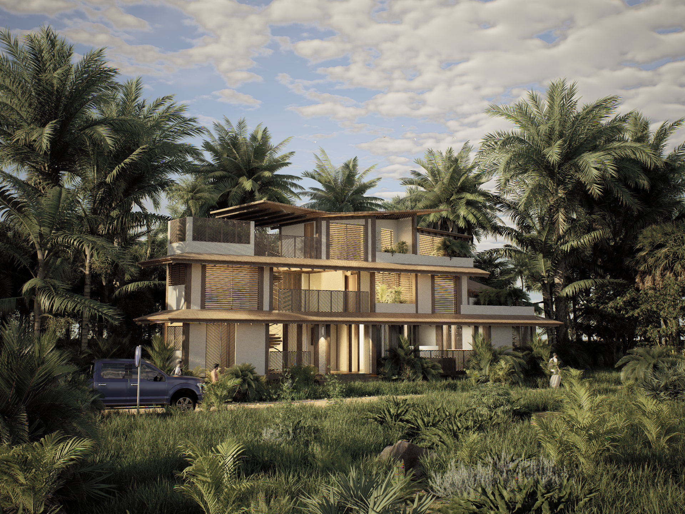
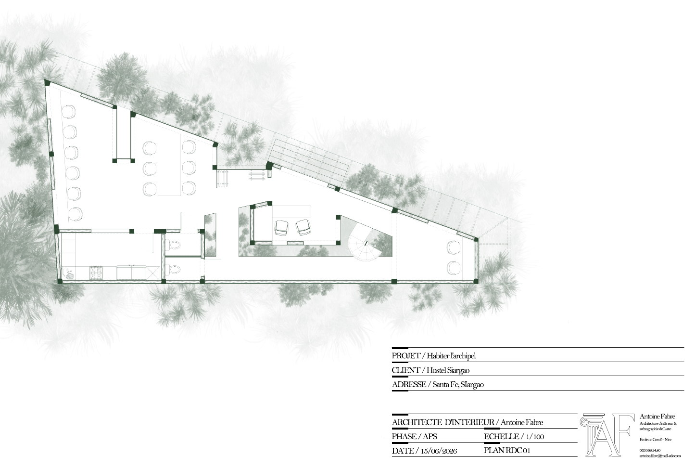
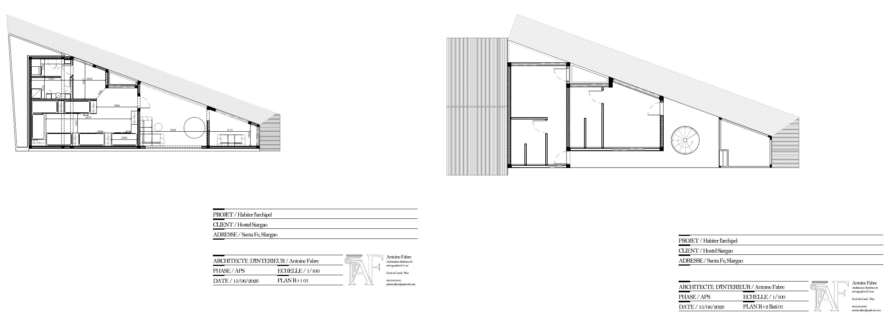
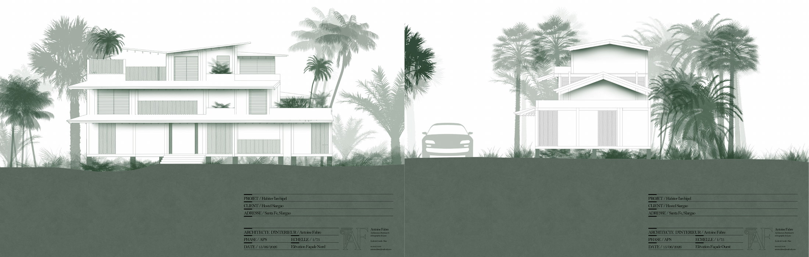
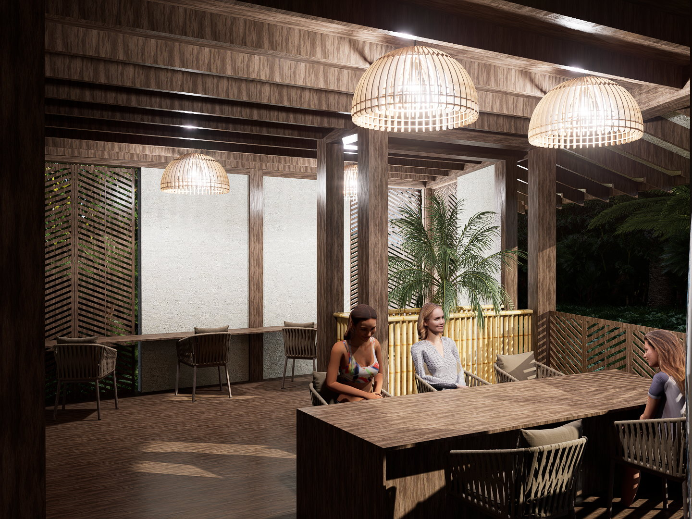
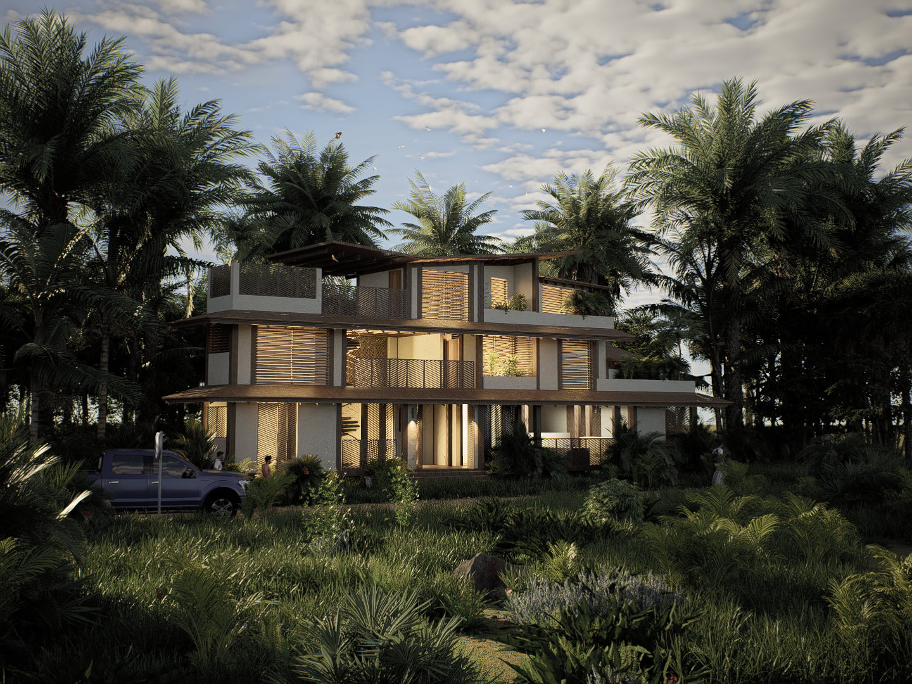

01 — ÉTUDE ARCHITECTURALE / PHILIPPINES
Habiter
l'archipel.
Une architecture qui naît du territoire, s'adapte au climat et prend forme entre les espaces.
FAITES DÉFILER POUR EXPLORER ↓
Et si l'architecture ne cherchait pas à dominer le paysage, mais à composer avec lui ?
À Santa Fe, sur l'île de Siargao, ce projet d'hostel explore la relation entre habitat collectif, intimité et paysage tropical.
La réflexion part des contraintes du lieu pour développer une architecture fragmentée, traversée par l'air, la lumière et les usages.
ANALYSER AVANT DE DESSINER
Observer.
Comprendre.
Implanter.
Le territoire et les parcours donnent les premières orientations. Les analyses permettent de passer du grand paysage à l'échelle des espaces habités.

LE CLIMAT COMME MATIÈRE DE PROJET
Composer avec
les éléments.
Trois lectures complémentaires du site : soleil, vents et précipitations. Elles interrogent l'orientation, la protection et les espaces intermédiaires.
Protéger
sans fermer.
La trajectoire du soleil invite à travailler les débords de toiture, les filtres et les zones d'ombre pour préserver des espaces ouverts et confortables.
Les trois analyses graphiques originales seront substituées à ce schéma d'intention.DE L'INTENTION À LA FORME
Fragmenter pour
mieux relier.
Les volumes sont pensés avec leurs intervalles : coursives, terrasses, circulations et espaces de rencontre deviennent des composantes du projet.

01 — ORGANISER LES NIVEAUX
02 — DESSINER LES FAÇADESHabiter
l'archipel.
Une architecture ouverte sur le paysage.
HABITER EN TROIS DIMENSIONS
Du plan
à la coupe.
La coupe révèle les relations entre niveaux, circulations, espaces communs et protections climatiques.




CONSTRUIRE / EXPÉRIMENTER
La matière
à l'épreuve.
La maquette met à l'épreuve les épaisseurs, les filtres, les débords et la rencontre entre structure et façade.


À compléter : tes axonométries de charpente, vues éclatées et détails de connexion, déjà transmis dans la conversation mais pas encore hébergés comme fichiers sur le site.